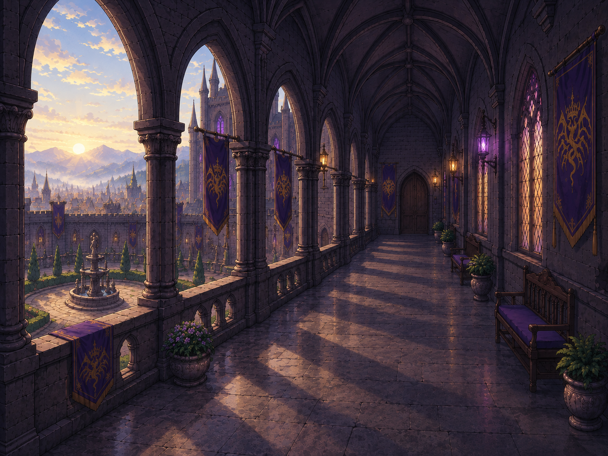

SILVER FILIGREE / DIALOGUE STUDY
銀細工を、台詞のそばに。
独立した見本。本編・Unityには未反映。

オルクス城 — 回廊

携帯端末
（携帯端末の音）
素材を読み込んでいます
色と大きさを調整
動かすと上の見本に反映します。色の最終決定は、ゆっくり試してから。
左右立ち絵の試作。尖った名前札と小さな尾を話者側に合わせます。聞き手は透過させず、輪郭内だけ暗くします。長文は数行ずつページ送りします。
実際の回廊で見比べる
Unityの素材と、10月3日の比較用の層の値を読み込みます。編集中の最新背景とは別の仮見本です。
チェックを外すとUnityと同じ足元位置。付けると背景と人物を一緒に上へ寄せます。元の層の設定は変更しません。
横幅を変えても銀細工は引き伸ばしません。
長文が収まらないときは、枠内をスクロールできます。
0%＝透けない／100%＝下地が透明。文字と銀細工は薄くなりません。
丸くなるのは直線の枠。銀細工の原稿の形は保ちます。
吹き出し尾の位置
0は今の位置。増やすと左端から枠の内側へ動きます。
0は今の位置。増やすと右端から枠の内側へ動きます。
銀細工の画像そのものは銀色のままです。
このブラウザに自動保存します。
共有用の設定／前の設定を読み込む
コピーしたJSON全文をClaude Codeへ渡せます。保存した設定をここへ貼り、「この設定を読み込む」で再現できます。